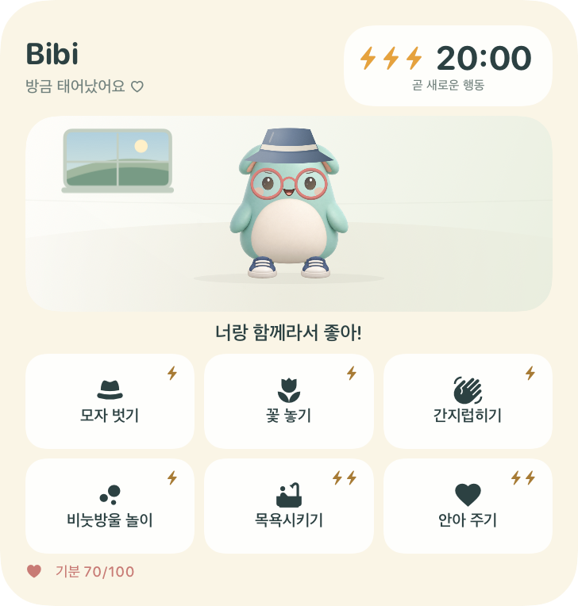

beewbe / iPhone
바로 여기서 돌봐요.
먹이를 주고, 놀아 주고, 쉬도록 도와주세요. 모든 돌봄은 위젯에서 이루어집니다.

beewbe
홈 화면에서 자신만의 작은 일상을 보내는 친구. 조금의 보살핌, 아늑한 방, 그리고 다시 만나고 싶은 마음.
iPhone · iOS 27 이상 · 개발 중beewbe / iPhone
먹이를 주고, 놀아 주고, 쉬도록 도와주세요. 모든 돌봄은 위젯에서 이루어집니다.

beewbe
선물을 발견하고, 친구에게 옷을 입히고, 방을 아늑한 집으로 꾸며주세요.
민트색
개인정보 처리방침
게임은 기기에 저장됩니다. 계정이나 광고가 없고, 플레이할 때 인터넷도 필요하지 않아요.
iPhone 속 작은 세상
앱을 열어 반려동물을 만나고 위젯을 추가하세요. 그다음부터는 탭 한 번으로 마음을 전할 수 있어요.
작은 보살핌이 큰 따뜻함으로.
beewbe는 계정, 광고, 추적 없이 오프라인으로 작동합니다. 게임 데이터는 기기에 저장됩니다.
이 방침은 beewbe 앱, 위젯, 이 웹사이트 및 개발자 Vlas Laptev에게 보낸 메시지에 적용됩니다.
반려동물의 이름과 모습, 언어, 진행 상황, 수집품, 그림은 기기에 저장됩니다. 앱과 위젯은 같은 저장 데이터를 사용합니다. beewbe는 이를 개발자에게 전송하지 않으며 분석 또는 광고 SDK를 포함하지 않습니다.
데이터는 beewbe가 설치되어 있는 동안 보관됩니다. 기기의 데이터를 지우려면 iPhone 설정에서 beewbe를 삭제하세요. 앱 정리하기를 사용하거나 위젯만 제거하면 저장 데이터는 남습니다.
저장 데이터는 Apple 또는 컴퓨터에서 관리하는 기기 백업에 포함될 수 있습니다. 백업을 복원하면 저장 데이터도 복원될 수 있습니다. 기기의 백업 설정에서 이러한 사본을 관리하세요.
TestFlight 테스트 중 Apple은 충돌 로그와 사용 정보를 자동 수집하여 개발자와 공유합니다. 보낸 피드백에는 스크린샷, 의견, 기기 정보와 초대 방식에 따른 이름 또는 이메일이 포함될 수 있습니다. 이 정보는 문제 조사와 beewbe 개선에 사용되며, 광고에 사용하거나 다른 제3자에게 공유하지 않습니다. Apple의 수집과 보관은 Apple이 자체적으로 관리합니다.
Apple: TestFlight 및 개인정보 보호 ↗Vlas Laptev에게 이메일을 보내면 이메일 주소, 메시지와 첨부 파일을 답변과 지원에 사용합니다. 메시지와 베타 피드백 사본은 요청 해결이나 문제 조사에 필요한 기간 또는 법률이 요구하는 기간에만 보관합니다. 개발자가 보유한 데이터에 대한 문의, 열람, 수정 또는 삭제 요청은 아래 이메일로 보내주세요. 개발자는 기기의 게임 저장 데이터에 접근하거나 Apple이 보유한 데이터를 직접 삭제할 수 없습니다. TestFlight에서 테스트를 중단할 수 있습니다.
vlas.developer@icloud.com일러스트 출처의 링크를 탭할 때만 타사 웹사이트가 열립니다. 해당 웹사이트에는 각자의 개인정보 처리방침이 적용됩니다.
이 페이지 자체는 쿠키를 설정하거나 분석 도구 및 광고를 사용하지 않으며 외부 글꼴이나 스크립트도 불러오지 않습니다. 호스팅 제공업체는 사이트 제공과 보호를 위해 IP 주소, 브라우저 정보, 접속 시간 등의 기술 정보를 처리할 수 있습니다. 외부 링크와 이메일 서비스에는 각자의 개인정보 처리방침이 적용됩니다.
이 방침이 변경되면 갱신된 내용과 날짜를 여기에 게시합니다.
개발자 · Vlas Laptev